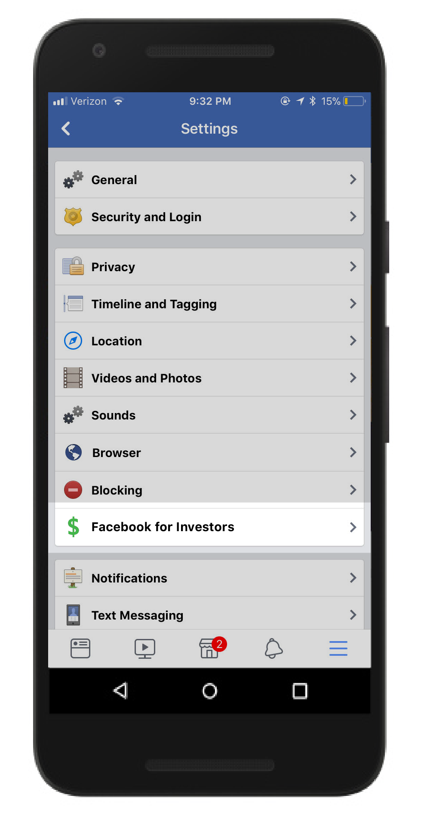
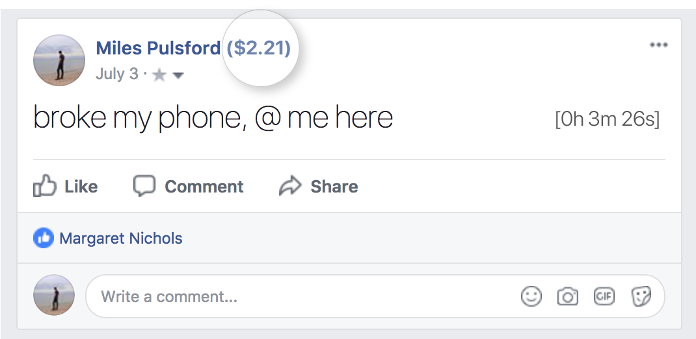
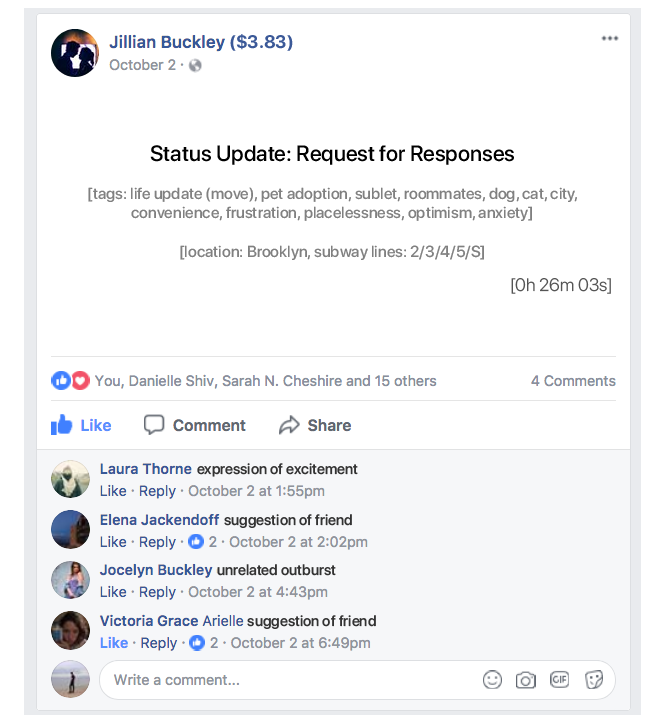

Facebook for Investors
We keep our community safe from harm by keeping user data as private as possible. We keep our investors safe by disclosing our monetization practices directly on our platform, in compliance with SEC regulation 1486.22 and the Free Platform Accountability Act. In the spirit of transparency and safety, we are pleased to comply with all new regulations that insure against the stock price volatility that led to the 2019 tech sector crash.
Tier 1 and Tier 2 investors now have access to Investor Mode, which allows increased access to information that shows how we monetize Facebook use. This new feature demonstrates the careful symbiosis we curate here at Facebook between advertisers and users.
You can enable Investor Mode on your Settings page.
User Value Score: Anywhere you see a user’s name, you will also see a currency score. This score is a highly accurate approximation of the return our advertisers can expect from targeting that individual.
This individual's User Value Score means that for every $1 advertisers have spent to target this individual, he has spent approximately $2.21 on advertised products.
Post attention metrics: All News Feed and Timeline posts clearly display the total amount of time a user spent viewing or responding to it. We know that in the social media economy, attention = value, and now our valued investors are privy to that formula too.

Analysis Mode: To get a sense of our AI capabilities, use Analysis View to replace all posts with an algorithmic analysis of what type of content was posted. By tagging content and interaction histories, we can guarantee that users’ interest brackets are accurately assessed.
About page: To see a summary of a particular user’s ad targeting data, click on the About tab on their profile. Personal details shared by the user will be replaced with particularized algorithmic segments and demographics that describe that individual.